Reference
Component Library
A standard library of 100+ parametric maker parts — insert, size, mate and re-use.
FlywheelCAD ships a standard library of everyday mechanical and electronic parts —
fasteners, bearings, gears, motors, connectors, board footprints and mounts. Every part is a
parametric component : pick it from a browser, choose a size, and it drops into
your design ready to position and mate. Dimensions trace to a published standard or a common
catalog part, so a bolt circle or a bearing bore is the real one.
FlywheelCAD's standard parts are parametric reconstructions from published engineering
standards (ISO/DIN/ANSI); dimensions are factual specifications, not data reproduced from
any vendor's catalog.
How the library works
Insert from a browser
Component → Insert from Library… opens a searchable browser with a live 3D
preview. Enumerated parameters (size, thread, designation…) appear as drop-downs ;
lengths and diameters are free-entry. Press insert and the part is placed as a component instance.
Copy-on-use
Inserting a part vendors its module into your document under lib/standard/,
so the document stays self-contained and travels with exactly the parts it uses. In a script the
same part is just an import: from lib.standard.bearings import bearing.
Named anchors
Each part exposes named reference points — a stepper's mount_face and
bolt_0..3, a bearing's face_a. Mate to them
(cad.mate_coincident(part, "face_a", plate.hole_0)) and the part follows when the
target moves.
Parametric & memoized
Ask for an M3×12 and an M4×20 and you get two components; ask for a size you already
used and it is reused, not rebuilt. Every factory also takes a quality preset
(preview / standard / high / ultra) controlling mesh resolution.
Scripting a part: each factory takes cad first, then its parameters, and
returns a component you instance. The tables below list every factory and its parameters
(drop-down choices are shown inline).
from flywheelcad import *
cad = FlywheelCAD()
from lib.standard.bearings import bearing
from lib.standard.fasteners import cap_screw
b = bearing(cad, designation="608") # a component
brg = cad.instance(b, translate=(0, 0, 0)) # placed in the assembly
screw = cad.instance(cap_screw(cad, thread="M3", length=10))
Motion & power transmission
Motors, bearings, gears, belts, springs and the linkages that tie them together.
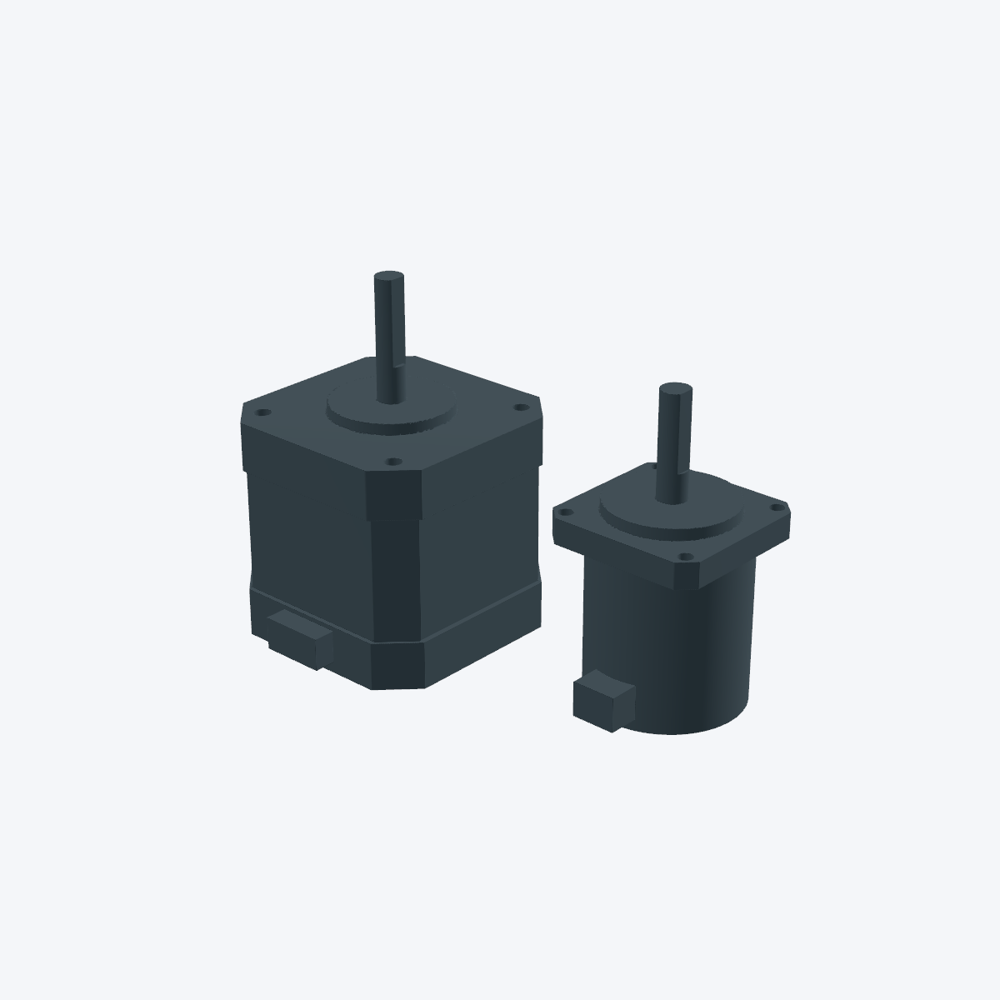
steppers 1 part NEMA stepper motors (square & round bodies)
Factory What it is Parameters stepperA NEMA stepper motor with catalog-style detailing. size 8 · 11 · 14 · 17 · 23 · 34length optional shaft_length optional body square · round
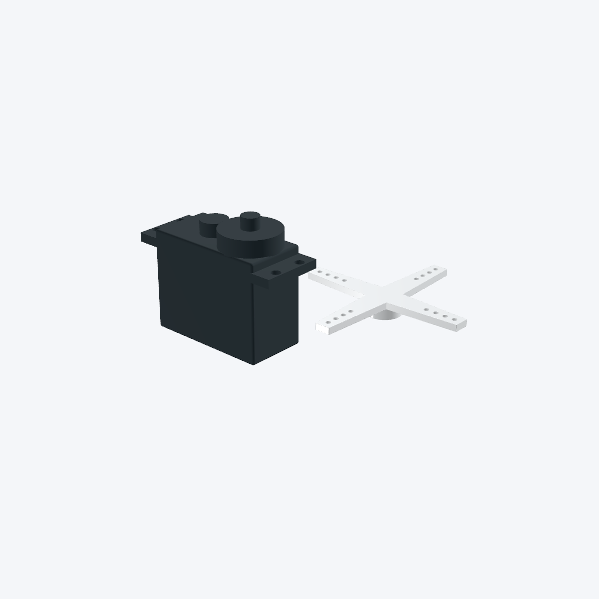
servos 2 parts Hobby servos and matching control horns
Factory What it is Parameters servoA hobby servo: case, mounting flange with screw holes, gear-head size sub_micro · micro · standard · largehornA servo control horn (arm) with linkage holes. style single · double · cross · discspline micro · standard · largelength optional
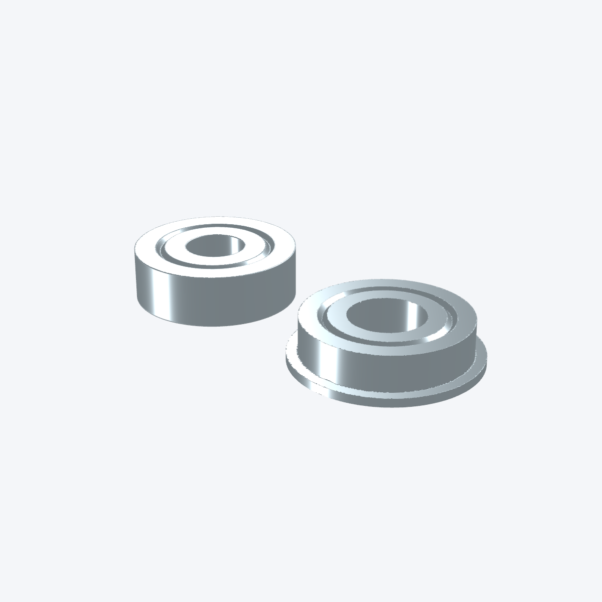
bearings 1 part Deep-groove ball bearings (ISO 15), plain and flanged
Factory What it is Parameters bearingA deep-groove ball bearing (see module docstring for designations). designation 623 · 624 · 625 · 626 · 608 · 688 · 6000 · 6001 · 6800 · 6801 · 6900 · 6902flanged (False)
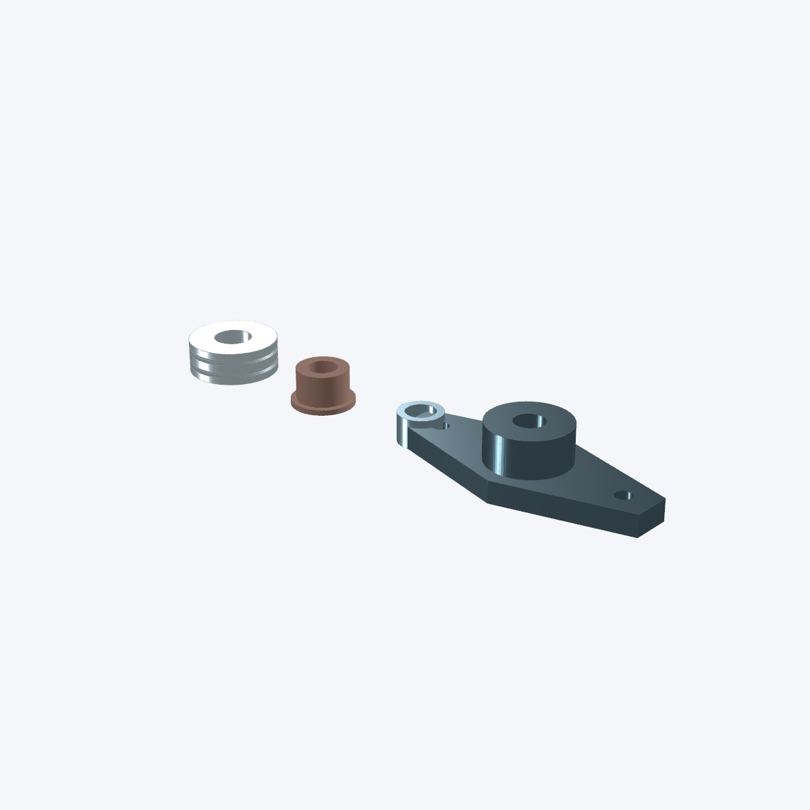
bearings_more 4 parts Thrust, sleeve, needle and 2-bolt flange bearings
Factory What it is Parameters thrust_bearingA single-direction thrust ball bearing: one continuous annular ring designation 51100 · 51101 · 51102 · 51103bushingA sleeve/sintered-bronze bushing: an annular tube, axis +Z, z=0..length. bore (8.0)od (10.0)length (10.0)style plain · flangedneedle_bearingA drawn-cup needle roller bearing: a thin-wall annular shell, axis designation HK0608 · HK0810 · HK1010 · HK1210flange_bearingA 2-bolt diamond-flange mounted bearing unit (KFL series): a size KFL08 · KFL10
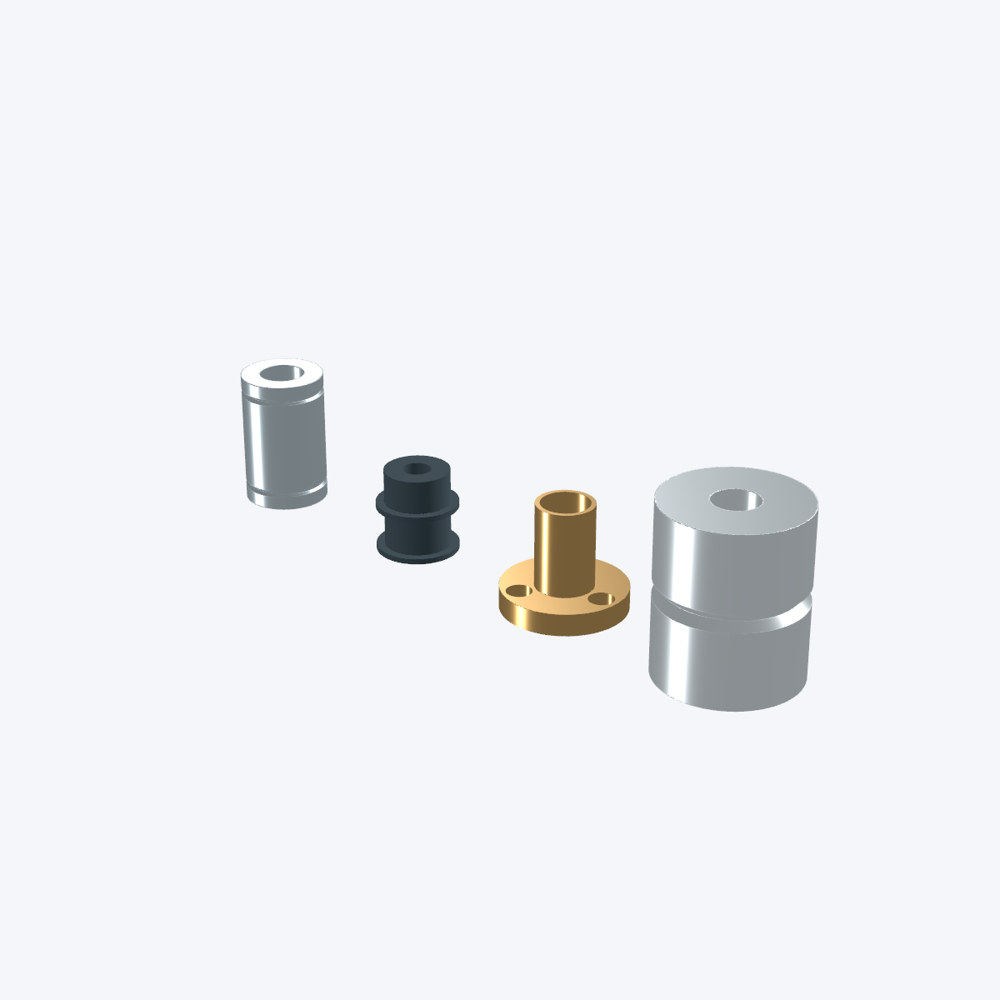
motion 5 parts LM linear bearings, GT2 pulleys, lead screws and couplings
Factory What it is Parameters lm_bearingAn LM____UU linear ball bearing: an annular tube with a shallow model LM6UU · LM8UU · LM10UU · LM12UUgt2_pulleyA GT2 (2 mm pitch) timing pulley: two flange disks around a central teeth (20)bore (5.0)leadscrewA trapezoidal lead screw at its nominal major diameter. Axis +Z. size TR8x2 · TR8x8 · TR10x2 · TR12x3length (200.0)threads cosmetic · realleadscrew_nutA brass flanged lead-screw nut: a flanged, through-bored cylinder size TR8 · TR10 · TR12shaft_couplingAn aluminium shaft coupling: outer Ø 25, length 30, with a stepped style rigid · flexiblebore_a (5.0)bore_b (8.0)
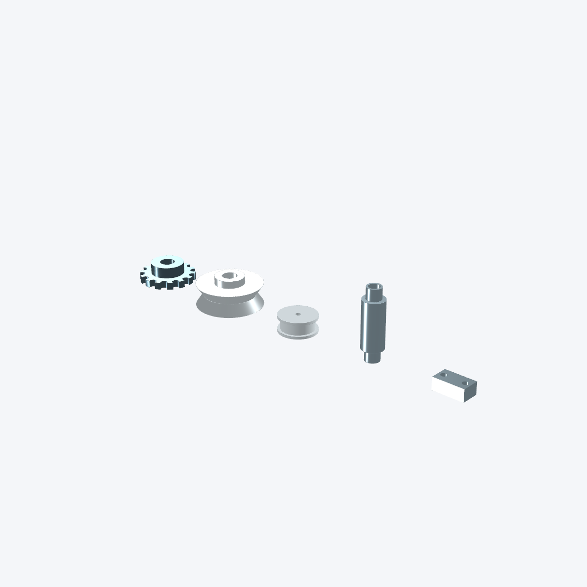
transmission 6 parts Roller-chain sprockets, V-belt/idler pulleys, belts, worms
Factory What it is Parameters sprocketA roller-chain sprocket: a flat disc (thickness 4) at the chain's teeth (16)chain #25 · #35 · #40bore (8.0)v_pulleyA V-belt pulley: an annular disc (width 12) with a single-V groove od (40.0)bore (8.0)idler_pulleyA smooth belt idler/tensioner wheel: two flange lips (dia od+3) od (18.0)bore (3.0)timing_beltA GT2 timing-belt loop shown as a thin closed racetrack band (teeth length (200.0)width (6.0)wormA worm-drive worm: a plain cylindrical blank (dia od, `length`) with length (30.0)od (12.0)bore (6.0)belt_clampA GT2 belt clamp: the toothed block that grips a timing belt's end and belt_width (6.0)teeth (6)
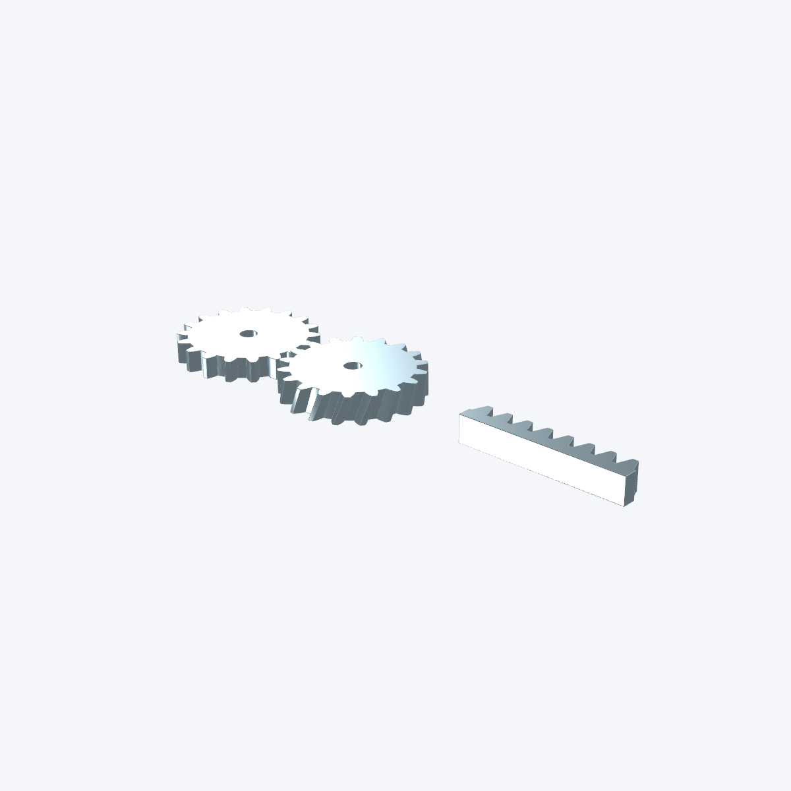
gears 3 parts Involute spur and helical gears, plus a matching rack
Factory What it is Parameters spur_gearAn involute spur gear. teeth (>=8), module (mm), thickness (face width), teeth (20)module (2.0)thickness (6.0)bore (5.0)pressure_angle 14.5 · 20.0 · 25.0helical_gearAn involute helical gear: the spur profile swept along a helix via the teeth (20)module (2.0)thickness (8.0)bore (5.0)helix_angle (20.0)hand right · leftpressure_angle 14.5 · 20.0 · 25.0gear_rackA straight involute-equivalent gear rack (the tooth strip a spur gear teeth (12)module (2.0)thickness (8.0)
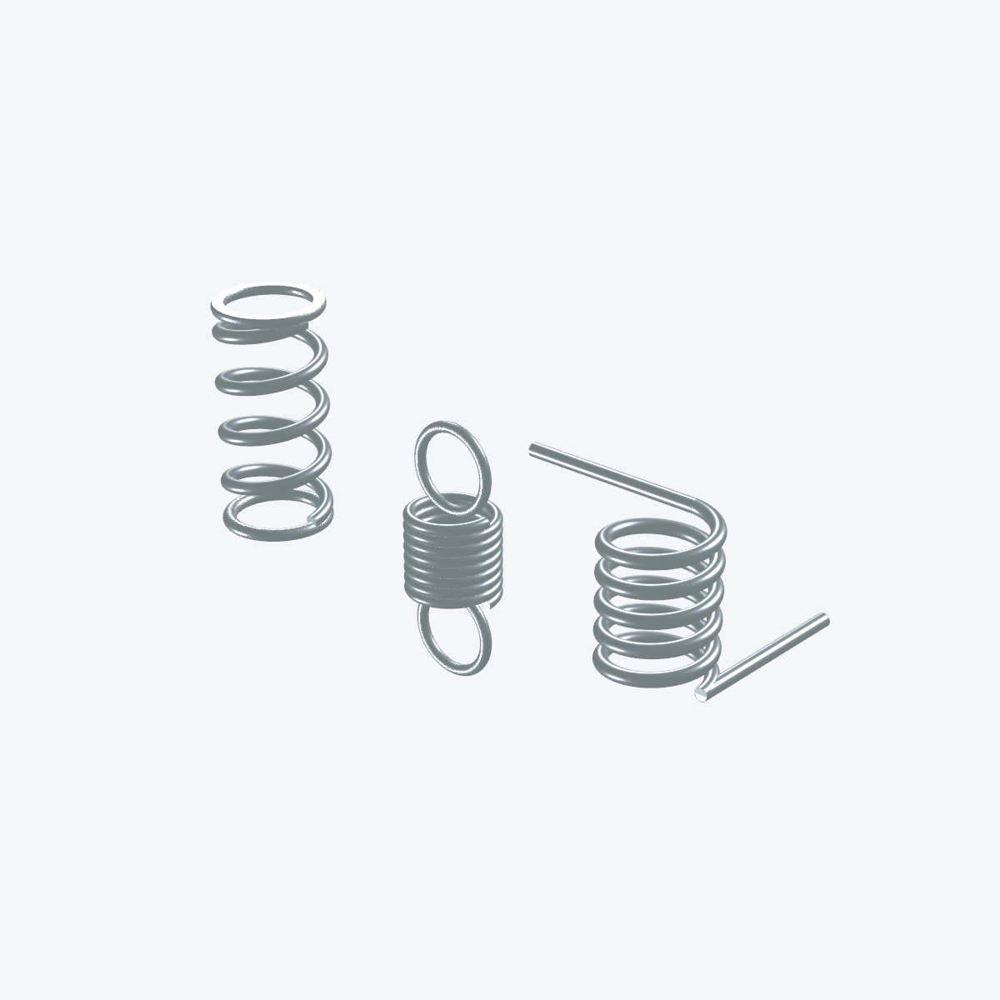
springs 3 parts Compression, extension and torsion springs
Factory What it is Parameters compression_springA helical compression spring. coils (6)wire_d (1.5)outer_d (12.0)free_length (25.0)ends (closed)extension_springA helical extension spring: close-wound body coils plus a loop at each coils (8)wire_d (1.2)outer_d (10.0)torsion_springA helical torsion spring: body coils plus two tangential legs. coils (5)wire_d (1.5)outer_d (12.0)leg_length (20.0)leg_angle (90.0)
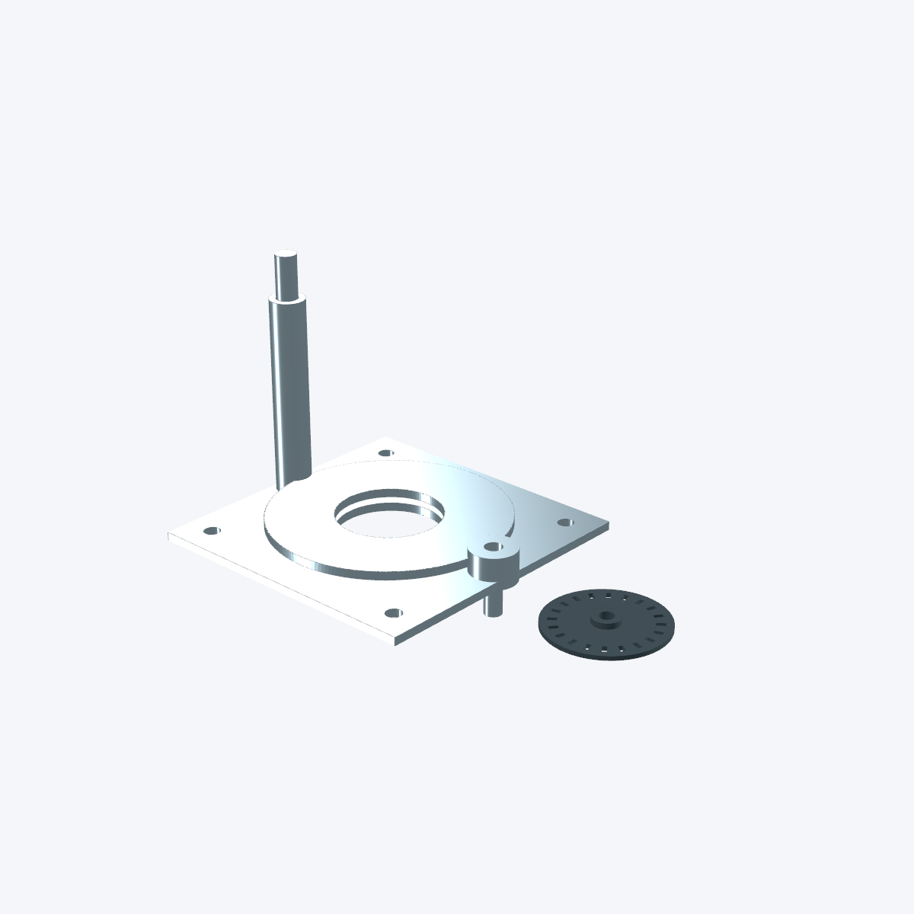
linear_motion 5 parts Ball screws, turntable bearings, cam followers, gearmotors
Factory What it is Parameters ball_screwA ball screw shaft at its nominal major diameter (thread cosmetic -- size SFU1204 · SFU1605 · SFU2005length (200.0)turntable_bearingA lazy-susan / slewing turntable bearing, represented as a short size 100mm · 150mmcam_followerA cam follower / track roller: a threaded stud (dia `bore`, 12mm bore (6.0)roller_d (16.0)encoder_wheelAn optical encoder disc: a thin disc (dia `od`, 1.5mm thick, bored slots (20)od (40.0)bore (5.0)dc_gearmotorA small DC gear motor: a gearbox (rectangular for N20, round for size N20 · 37D
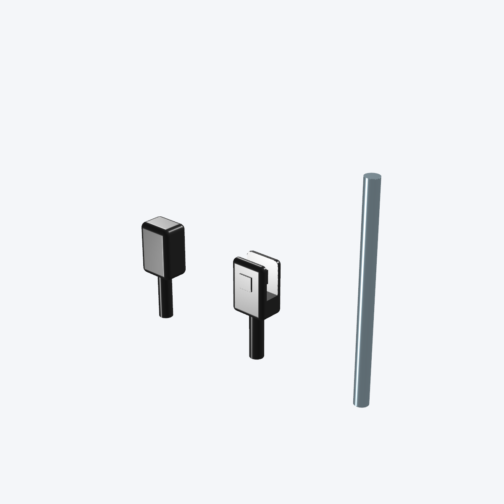
linkage 3 parts RC ball links, clevises and pushrods
Factory What it is Parameters ball_linkA ball link (rod end): threaded shank into a housing that swivels thread M2 · M3clevisA clevis (fork) link: threaded shank into a forked end with a thread M2 · M3pushrodA plain pushrod (threaded ends implied). Runs z = 0 → length. diameter (2.0)length (80.0)
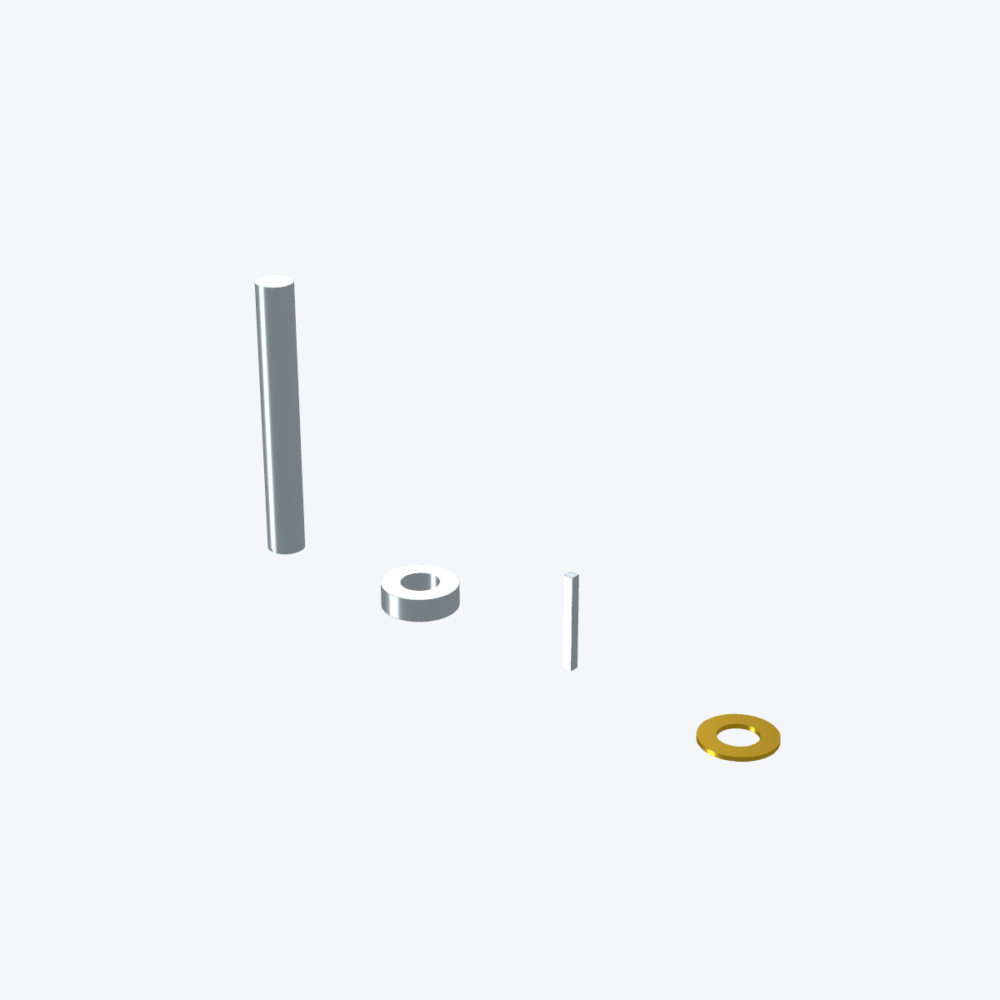
shafting 4 parts Shafts with plain/chamfered ends, shaft collars, keys and thrust washers
Factory What it is Parameters shaftA plain round shaft. `end="chamfered"` breaks both ends with a 45 deg diameter (8.0)length (100.0)end plain · chamferedshaft_collarA set-screw shaft collar: a ring clamped to a shaft to locate a part bore (8.0)style solid · splitkeyA parallel key blank (DIN 6885 A, square ends), sized from the shaft shaft_d (8.0)length (20.0)thrust_washerA plain thrust/shim washer for a shaft: a flat annulus, bronze-coloured bore (8.0)
Fasteners & hardware
Metric fasteners traceable to ISO / DIN standards, plus the negative bodies that cut their holes.
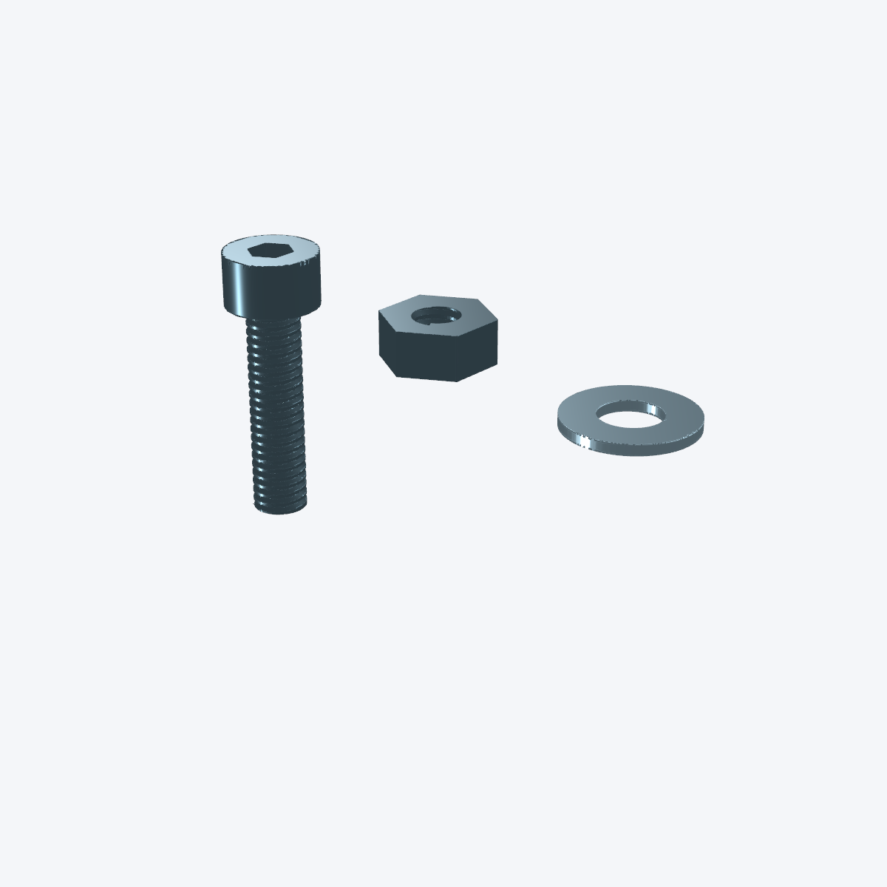
fasteners 5 parts Cap screws, hex nuts, washers and clearance/tap hole-cutters
Factory What it is Parameters cap_screwA DIN 912 socket head cap screw. thread M2 · M2.5 · M3 · M4 · M5 · M6 · M8length (12.0)threads cosmetic · realhex_nutAn ISO 4032 hex nut. Anchors: bottom (z=0), top. Flats face ±Y. thread M2 · M2.5 · M3 · M4 · M5 · M6 · M8threads cosmetic · realwasherAn ISO 7089 flat washer. Anchors: bottom (z=0), top. thread M2 · M2.5 · M3 · M4 · M5 · M6 · M8clearanceNEGATIVE body: an ISO 273 medium-fit clearance volume to subtract. thread M2 · M2.5 · M3 · M4 · M5 · M6 · M8length (12.0)head_pocket (False)tapNEGATIVE body: a tap-drill volume (for threads cut into the part). thread M2 · M2.5 · M3 · M4 · M5 · M6 · M8length (10.0)
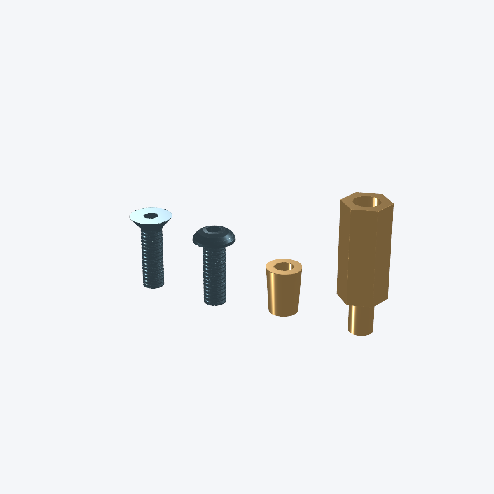
fasteners_more 6 parts Countersunk / button / grub screws, heat-set inserts, standoffs, threaded rod
Factory What it is Parameters countersunkAn ISO 10642 flat (countersunk) socket-head screw. thread M2 · M2.5 · M3 · M4 · M5 · M6 · M8length (12.0)threads cosmetic · realbutton_headAn ISO 7380 button (dome) head socket screw. thread M2 · M2.5 · M3 · M4 · M5 · M6 · M8length (12.0)threads cosmetic · realgrub_screwAn ISO 4026 socket set (grub) screw: a headless threaded cylinder with thread M2 · M2.5 · M3 · M4 · M5 · M6 · M8length (6.0)threads cosmetic · realheatset_insertA tapered brass heat-set threaded insert (press-in, for 3D prints). thread M2 · M2.5 · M3 · M4 · M5standoffA hex brass standoff. Anchors: base (z=0), top (z=length); a male-female thread M2 · M2.5 · M3 · M4 · M5length (15.0)gender female-female · male-femalethreaded_rodThreaded rod / studding at the nominal major diameter. Stands up +Z. thread M2 · M2.5 · M3 · M4 · M5 · M6 · M8length (60.0)threads cosmetic · real
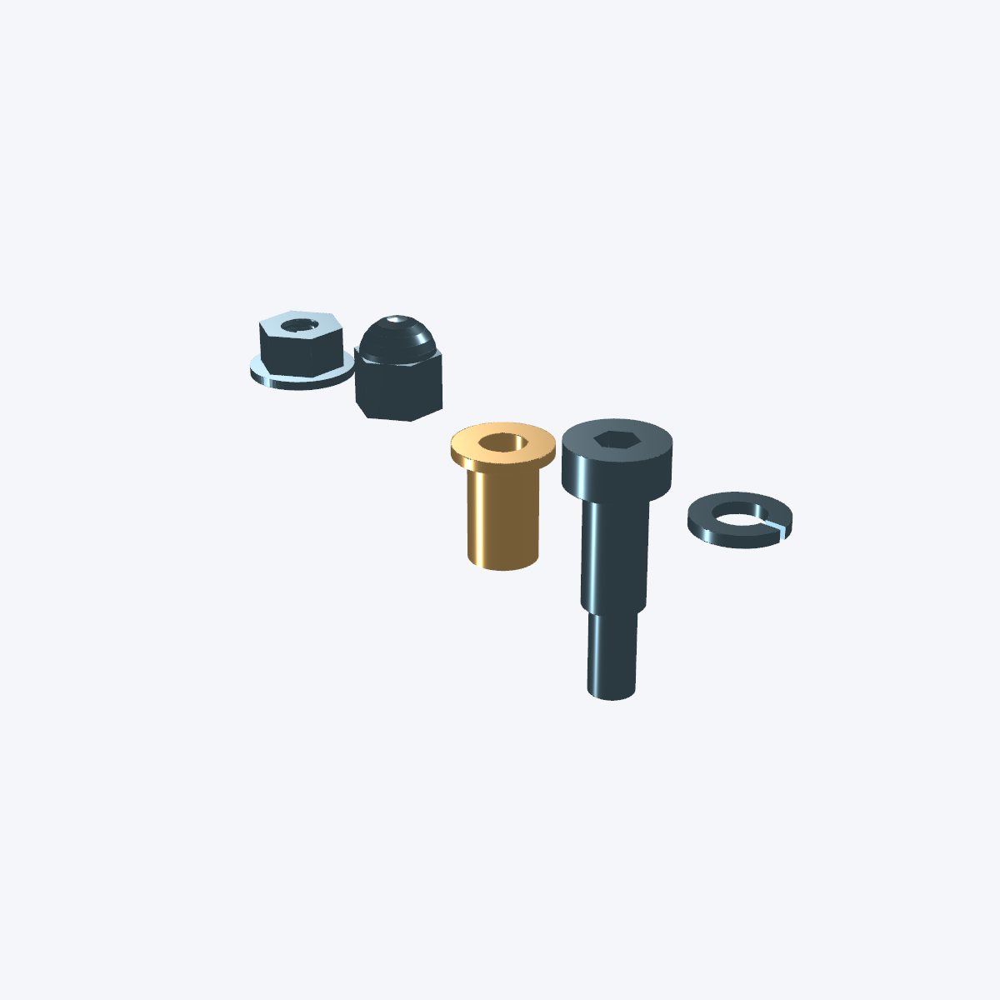
fasteners_hardware 5 parts Flange & acorn nuts, rivnuts, shoulder screws, lock washers
Factory What it is Parameters flange_nutAn ISO 4161 serrated hex flange nut (serrations cosmetic). thread M4 · M5 · M6 · M8 · M10threads cosmetic · realacorn_nutA DIN 1587 domed acorn (cap) nut: a blind-bored hex base capped by a thread M4 · M5 · M6 · M8 · M10threads cosmetic · realrivnutA blind rivet-nut / threaded insert: a flange disc atop a knurled thread M4 · M5 · M6 · M8 · M10shoulder_screwAn ISO 7379 shoulder (stripper) screw: a precision shoulder followed shoulder_d 6 · 8 · 10 · 12length (20.0)lock_washerA lock washer: "split" (DIN 127 spring ring, approximated as an thread M3 · M4 · M5 · M6 · M8 · M10style split · external_tooth · internal_tooth
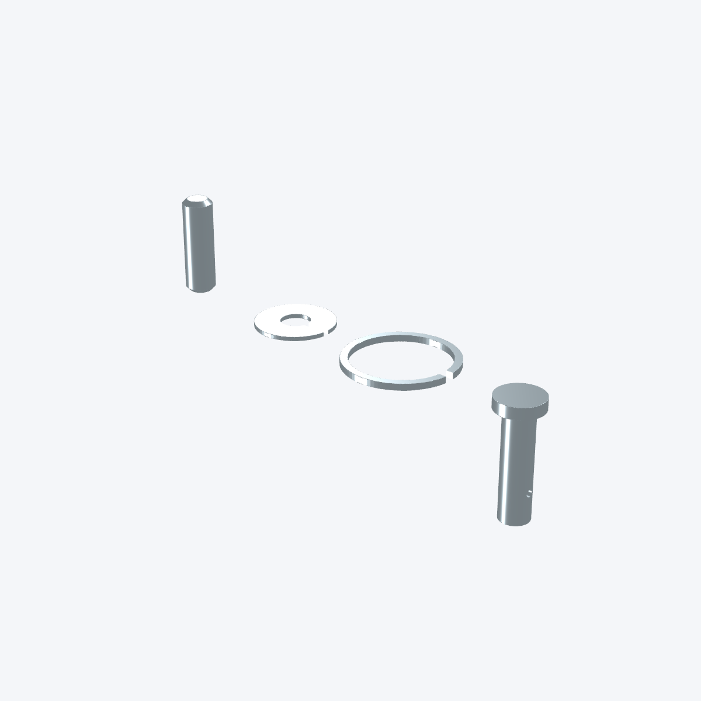
fasteners_pins 6 parts Dowel / spring / clevis / cotter pins, E-clips, retaining rings
Factory What it is Parameters dowel_pinAn ISO 2338 hardened dowel pin (h8 tolerance): a plain cylinder with diameter (5.0)length (16.0)spring_pinAn ISO 8752 slotted spring (roll) pin: a rolled tube (wall ~0.12 x diameter (4.0)length (20.0)e_clipA DIN 6799 E-clip (external retaining ring): a flat annulus sized for shaft (6.0)retaining_ringA DIN 471 (external, sprung onto a shaft) / DIN 472 (internal, bore (20.0)kind internal · externalclevis_pinAn ISO 2341 clevis pin: a cylindrical shank with a flat head at one diameter (5.0)length (20.0)cotter_pinAn ISO 1234 / DIN 94 split (cotter) pin, simplified as a single diameter (3.2)length (40.0)
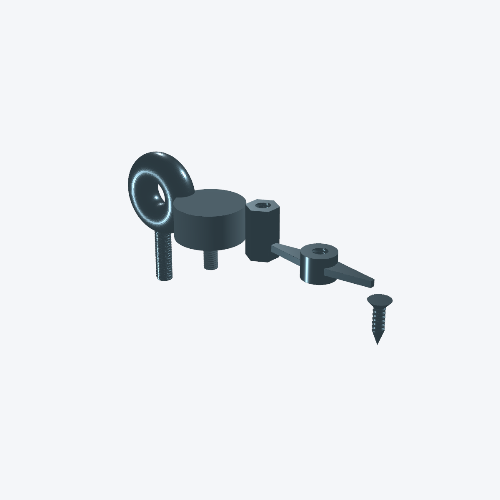
fasteners_rigging 6 parts Eye & U-bolts, thumb / self-tapping screws, wing & coupling nuts
Factory What it is Parameters eye_boltA DIN 444-style lifting eye bolt: a threaded shank topped by a round thread M4 · M5 · M6 · M8 · M10threads (cosmetic)u_boltA U-bolt: two vertical threaded legs joined by a semicircular bend. thread M4 · M5 · M6 · M8 · M10width (30.0)height (50.0)threads (cosmetic)thumb_screwA knurled thumb screw (hand-tightening fastener): a flat knurled thread M3 · M4 · M5 · M6 · M8length (12.0)threads cosmetic · realcoupling_nutA long coupling nut (DIN 6334-style): a hex prism with a through thread M4 · M5 · M6 · M8 · M10threads cosmetic · realwing_nutA wing nut (DIN 315-style butterfly nut): a bored cylindrical body thread M4 · M5 · M6 · M8 · M10threads cosmetic · realself_tapping_screwA self-tapping / wood screw: a flat head flush at z = 0, tapering diameter (4.0)length (16.0)threads cosmetic · real
Electronics & enclosure
Through-hole parts, connectors, breakout-board footprints and panel controls to design cases around.
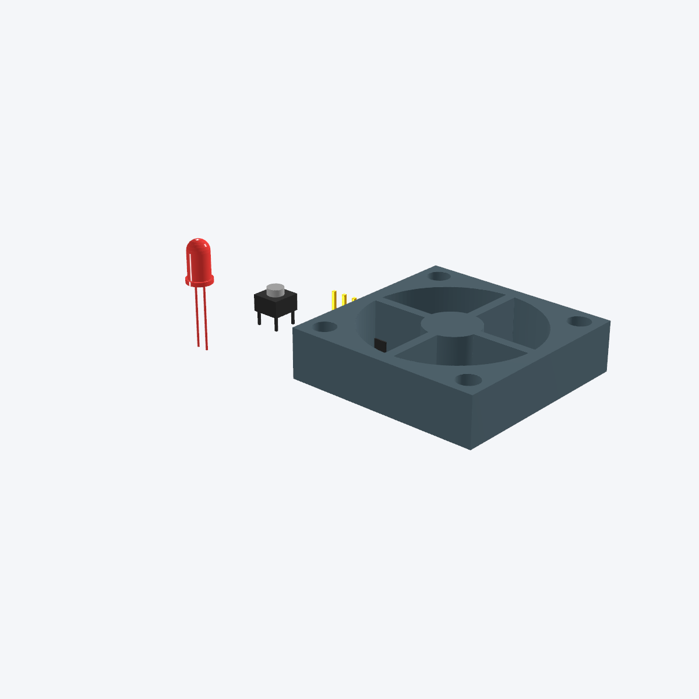
electronics 5 parts LEDs, tactile buttons, 0.1" headers, barrel jacks, cooling fans
Factory What it is Parameters ledA through-hole LED. size: "3mm" or "5mm". size 3mm · 5mmtact_buttonA tactile push button. size: "6mm" or "12mm". size 6mm · 12mmheaderA 0.1" (2.54mm pitch) pin header. pins: count per row (free text); pins (4)rows 1 · 2barrel_jackA PCB-mount DC barrel jack (5.5x2.1mm class). — fanA square cooling fan. size: "40mm", "60mm", "80mm", or "120mm". size 40mm · 60mm · 80mm · 120mm
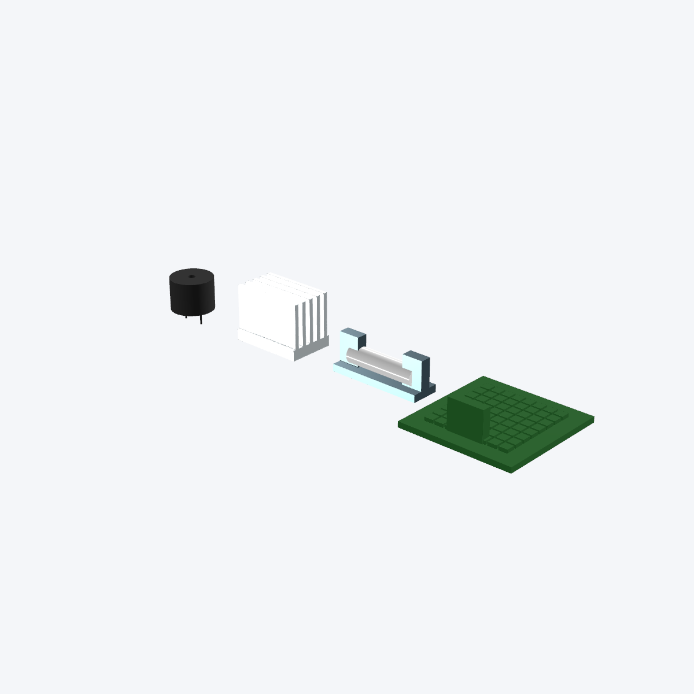
electronics_more 5 parts Buzzers, heat sinks, fuse holders, LED matrices, Pi HATs
Factory What it is Parameters buzzerA through-hole piezo buzzer can (see module docstring for dims). kind active · passiveheat_sinkAn extruded aluminium heat sink (see module docstring for dims). style TO220 · RPifuse_holderA panel/PCB fuse-clip holder for a 5x20 mm fuse (see module — led_matrixAn LED matrix / display module (see module docstring for dims). size 8x8 · MAX7219rpi_hatA Raspberry Pi HAT/shield footprint board (see module docstring —
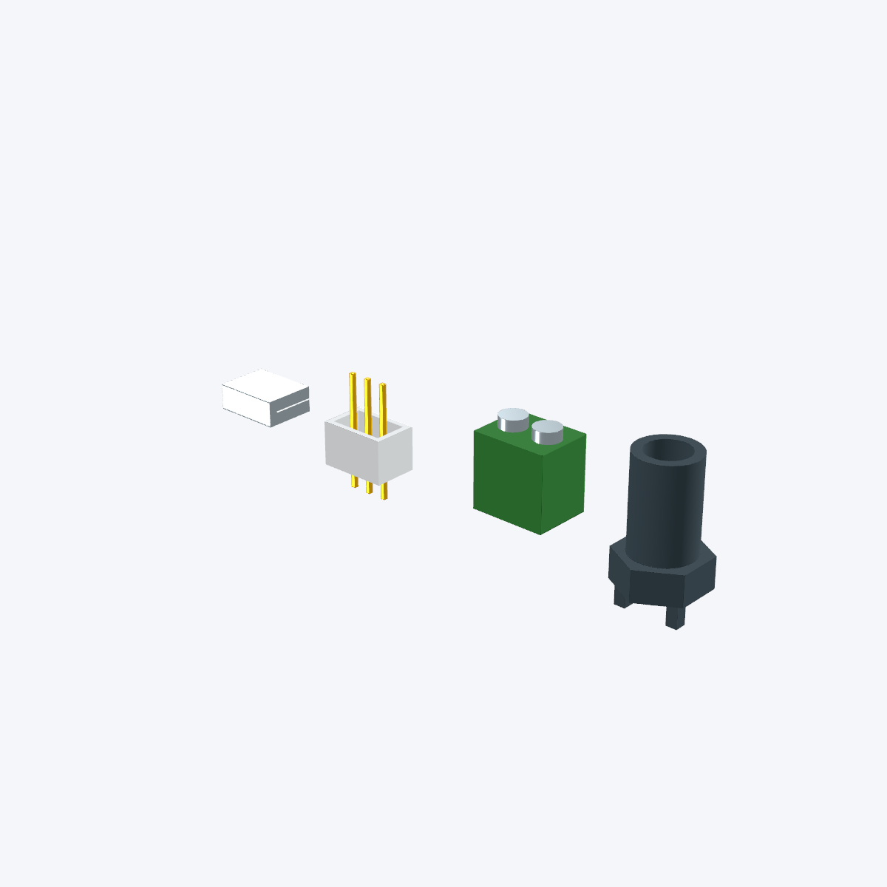
connectors 5 parts USB, JST, Dupont, screw terminal blocks, panel jacks
Factory What it is Parameters usbA USB receptacle shell: an outer metal shell block minus a mouth kind A · C · microjstA JST-XH style 2.5mm-pitch wire-to-board header. White nylon housing pins (2)dupontA Dupont/"berg" 2.54mm female housing: black nylon shell pins (1)rows 1 · 2terminal_blockA screw terminal block, 5.08mm pitch: green body (5.08*ways) long x ways (2)barrel_jack_panelA panel-mount DC barrel jack, simplified as an on-axis (+Z) stack: a —
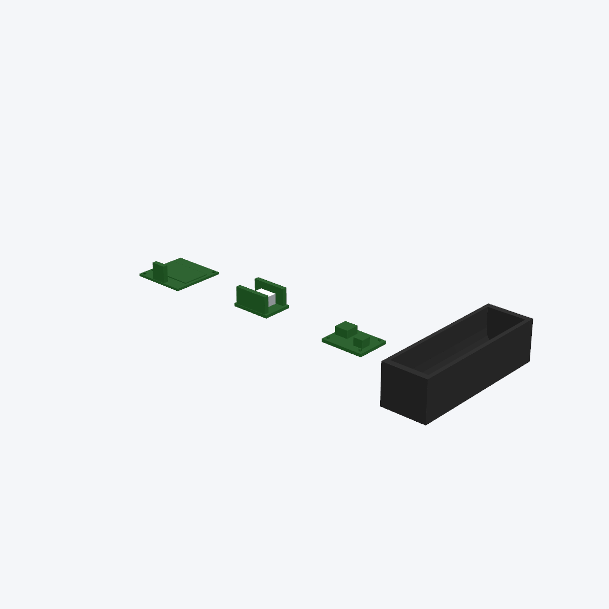
modules 5 parts OLED, stepper-driver, buck-converter and battery-holder boards
Factory What it is Parameters oled_displayA small OLED display breakout module. size 0.96 · 1.3relay_moduleA multi-channel relay breakout board (generic Songle SRD-05VDC-SL-C channels (1)stepper_driverAn A4988/DRV8825-class stepper driver carrier board (Pololu-style kind A4988 · DRV8825buck_converterA mini buck (step-down) converter module (MP1584EN-class). PCB — battery_holderA battery holder. cell "18650": box (count*19.5 + 3) x 72 x 20 mm cell AA · 18650 · CR2032count (1)
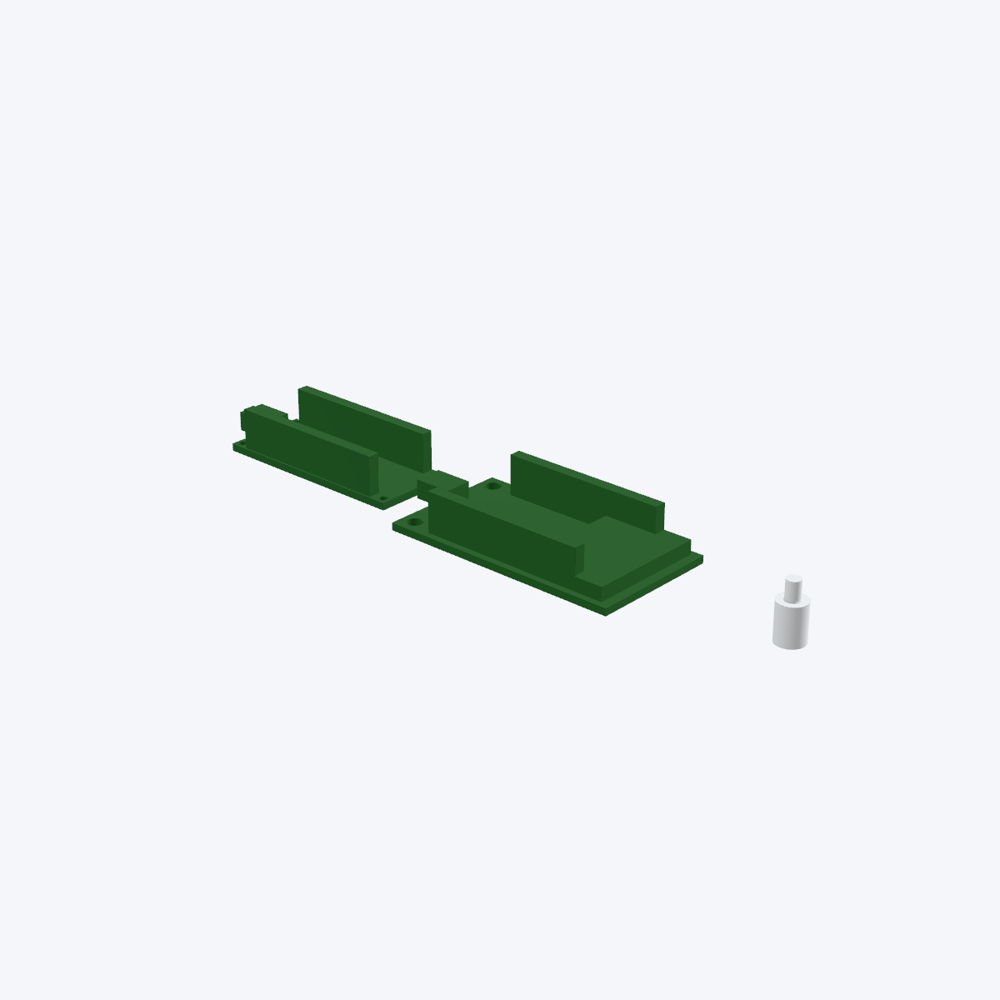
board_footprints 5 parts Arduino, Raspberry Pi and ESP32 board footprints
Factory What it is Parameters arduino_unoAn Arduino Uno R3-footprint board: PCB outline, the 4 real mounting — arduino_nanoAn Arduino Nano-footprint board: PCB outline, 4 corner mounting — raspberry_piA Raspberry Pi-footprint board: PCB outline, the 4 real mounting model 3B · 4B · Zeroesp32_devkitAn ESP32 DevKit-footprint board: PCB outline, two 15-pin header — pcb_standoffA nylon PCB support/board-mount spacer: a round spacer body (dia height (6.0)
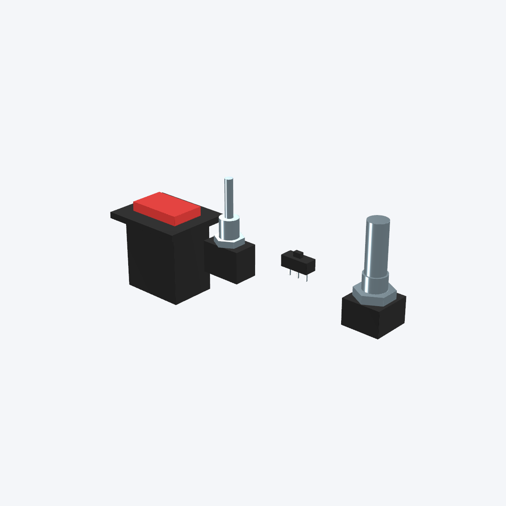
switches 5 parts Rocker / toggle / slide switches, potentiometers, rotary encoders
Factory What it is Parameters rocker_switchA KCD1-class panel rocker switch (21x15mm cutout). — toggle_switchA mini toggle switch (MTS-101 class). — slide_switchAn SPDT slide switch. — potentiometerA WH148 / Alpha-class 9mm panel potentiometer. shaft round · d_flat · knurledrotary_encoderAn EC11-class rotary encoder with pushbutton. —
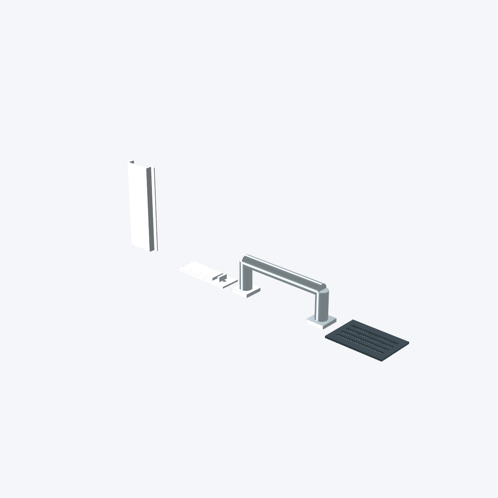
enclosure 4 parts DIN rail, draw latches, bar handles and vent grilles
Factory What it is Parameters din_railA TS35 top-hat DIN rail (EN 60715): the 35 mm hat section every length (150.0)size TS35draw_latchA draw (toggle) latch: the base plate that screws to the enclosure and size (60.0)handleA U-shaped pull handle: two feet and a round bar between them. span (120.0)height (32.0)bar_d (12.0)vent_grilleA ventilation panel: a plate with a louvre pattern cut through, for width (60.0)height (40.0)pattern slots · grid
Structural, fluid & mounts
Framing, magnets, pneumatics and the brackets that bolt everything down.
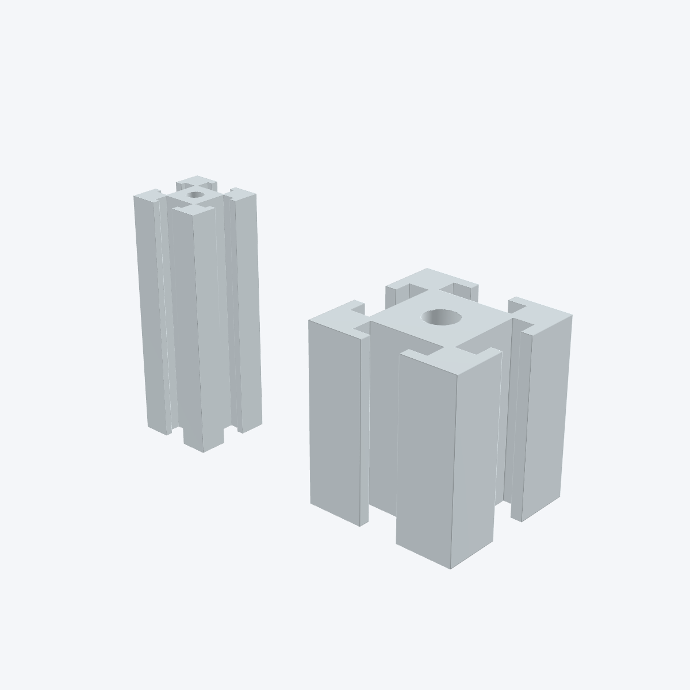
extrusions 1 part T-slot aluminium extrusion rails (20/30/40 series)
Factory What it is Parameters railA T-slot extrusion rail. profile 2020 · 2040 · 4020 · 2060 · 3030 · 3060 · 4040 · 4080length (100.0)
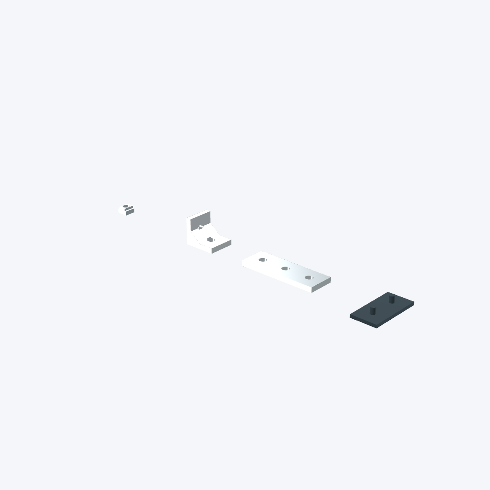
framing 4 parts T-slot nuts, corner brackets, angle plates and end caps for those rails
Factory What it is Parameters t_slot_nutA T-slot nut: the sliding block that drops into a rail slot and takes a size (20)thread optional style (tee)corner_bracketAn L bracket joining two rails at 90 deg: two arms, each with a size (20)thickness optional gusset (True)angle_plateA flat joining plate (straight, not cornered): a strip with a row of size (20)holes (2)thickness optional end_capA moulded end cap that closes a rail's open end: a plate the size of the size (2020)thickness (2.5)
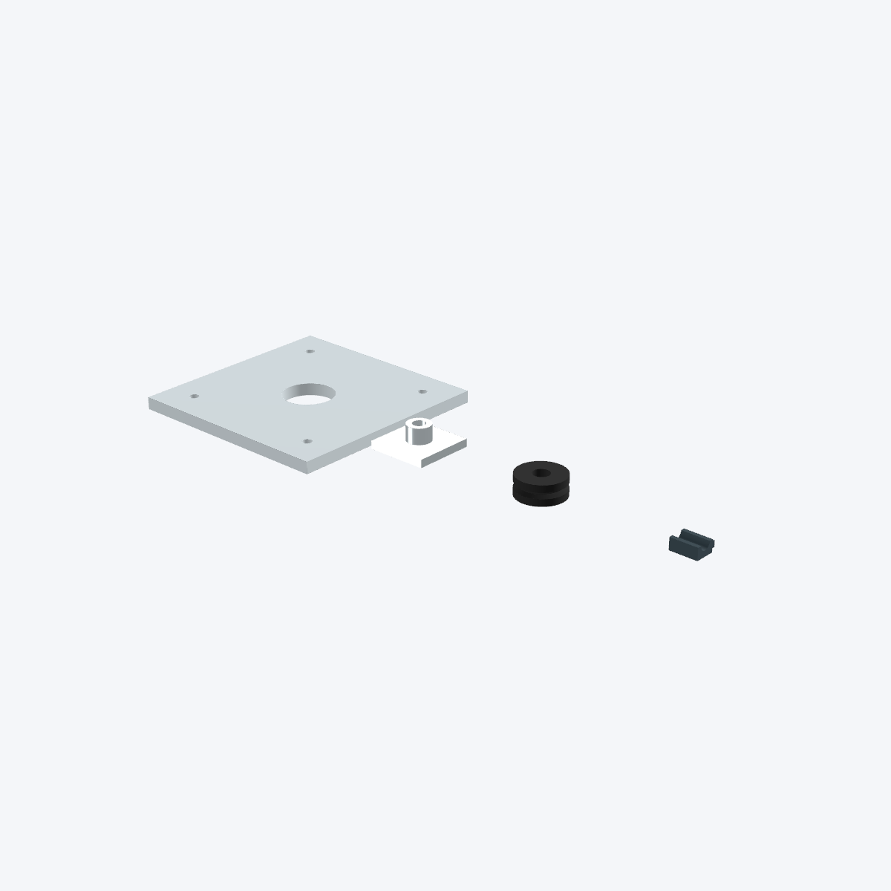
mounts 5 parts VESA plates, tripod bosses, caster wheels, piano hinges, cable clips
Factory What it is Parameters vesa_mountA VESA (FDMI) monitor-mount adapter plate: a square plate with a pattern 75 · 100 · 200tripod_mountA 1/4"-20 camera/tripod mounting boss: a 30x30x4mm backing plate — caster_wheelA V-groove skate/V-slot caster wheel: an annular revolve with a diameter (24.0)bore (8.0)piano_hingeA continuous ("piano") hinge: two flat leaves (each 15mm wide x length (100.0)cable_clipA cable saddle / P-clip: a block (width cable_d+8, depth cable_d+4, cable_d (6.0)
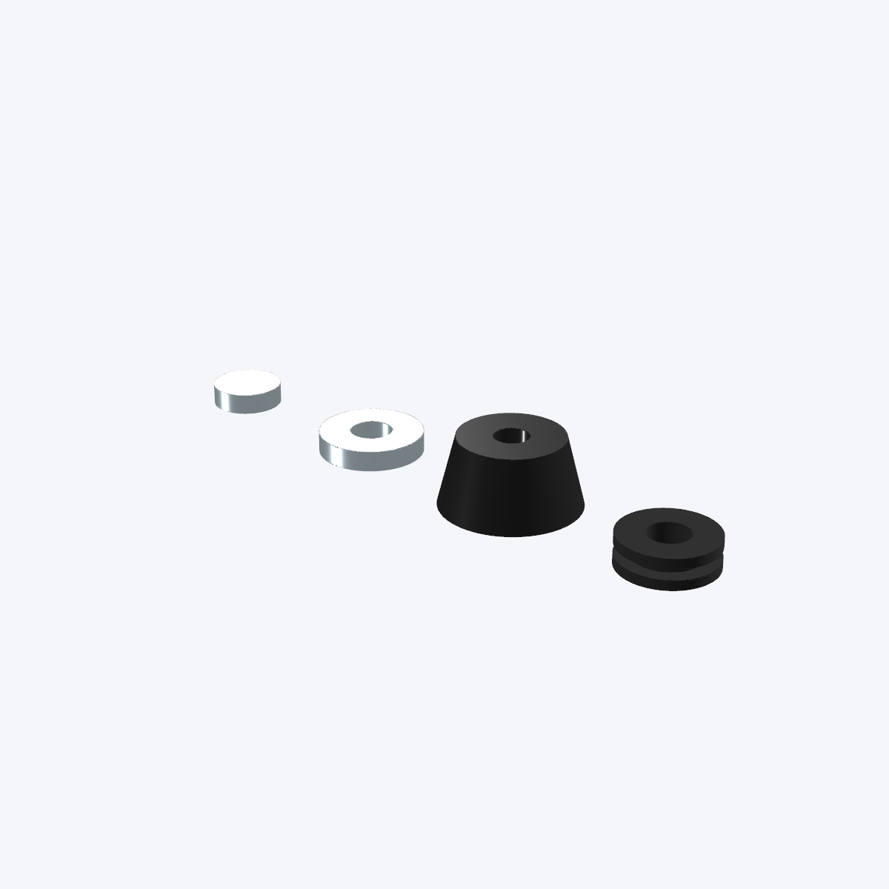
magnets_misc 3 parts Neodymium magnets, rubber feet, panel grommets
Factory What it is Parameters magnetA neodymium magnet. shape: "disc" (solid cyl), "ring" (annular, uses shape disc · ring · blockdiameter (10.0)bore (0.0)thickness (3.0)rubber_footA rubber bumper foot: a truncated cone with a central screw through-hole. size small · medium · largegrommetA rubber panel grommet (spool): flanges grip a panel of `thickness` panel_bore (8.0)thickness (1.5)
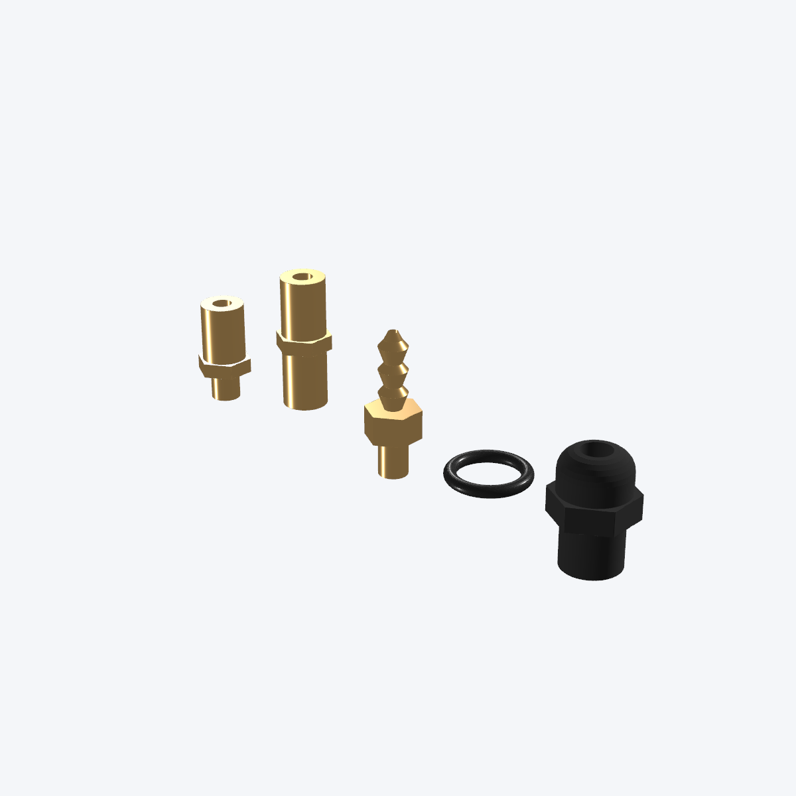
pneumatics 5 parts Push-fit bowden fittings, hose barbs, O-rings, cable glands
Factory What it is Parameters pneumatic_fittingA PC-series push-to-connect bowden fitting: threaded base (-Z) + hex size PC4-M6 · PC4-M10 · PC6-M6bowden_couplerAn inline PC4-class tube-to-tube coupler: two collet bodies back to tube_od (4.0)hose_barbA barbed hose-to-thread adapter: threaded base (-Z) + hex + a barbed hose_id (6.0)thread M6 · M8 · G1_4o_ringAn elastomer O-ring: a torus (AS568/ISO 3601 sizing convention — inner_d (10.0)cross_d (2.0)cable_glandA metric/PG-thread cable gland: threaded body (-Z) + hex + a domed size M12 · M16 · PG7 · PG9